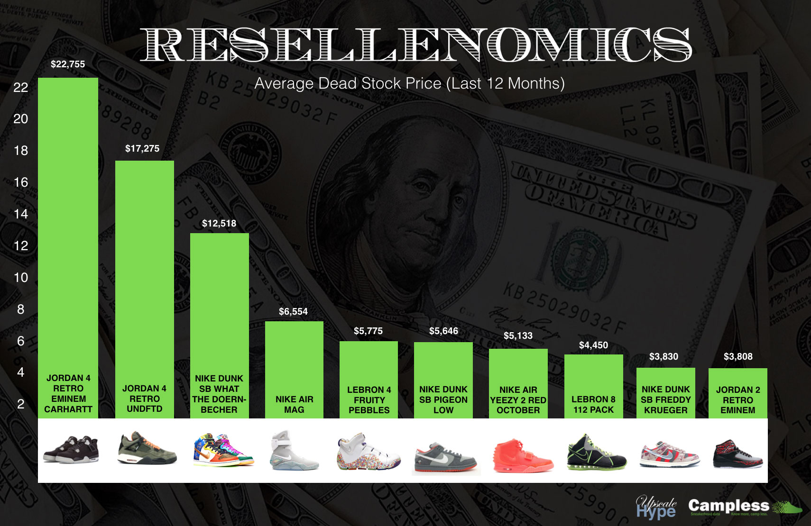

Reselling
Sneaker reselling has become a billion-dollar industry due to online sale sites like StockX and Goat which are footwear stock market that allows buyers and sellers to do business at a fair market value. Every hyped sneaker release people are going to buy the shoes with the sole intent of reselling them. The resell game used to be a place that people who were selling sneakers on the secondary were simply unloading their collections or pushing a one-off pair that rocketed in value. Nowadays, literally every sneaker that releases is being resold by the bundles. And it’s easier than ever, thanks to consignment shops like Flight Club and Stadium Goods, apps such as StockX and GOAT, and social media platforms, particularly Instagram and Facebook. Sneaker reselling has been normalized, and that’s forced the practice to evolve into something many never saw coming a decade ago.
Many more people are reselling shoes, partly due to the fact that sneakers have become a lot more mainstream than they were 10 to 15 years ago. Moms are entering Yeezy raffles and kids under the age of 10 are trying to flip shoes that they bought on the weekend. That’s drastically different from the early days of reselling, when there was a lot more legwork involved, and it wasn’t a full-time hustle for as many people.
As the reselling industry has grown, sellers and owners of consignment stores, which typically take a 20 percent profit from each sale, have become more savvy in how they operate. They’re learning how to sell sneakers faster and at a more efficient rate.The story of sneaker resellers has gone from connoisseurs who were selling old shoes or helping fellow collectors out to everyone who could get their hands on a pair of sneakers taking advantage of the system. Money talks, often more than owning a nice pair of shoes.
